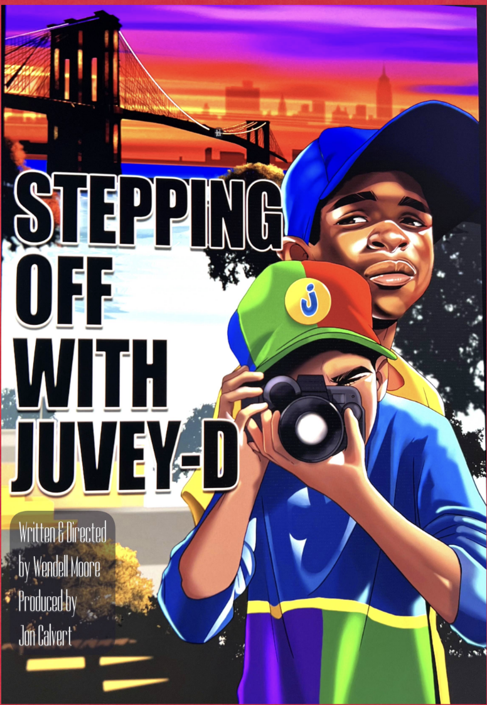

Synopsis
After rediscovering footage he shot on his father's video camera as a teenager, Dion “Juvey-D” Jackson, now an adult, revisits his formative years. Each tape reveals aspects of his life that helped shape him.
The year is 1992 and 14-year-old Dion periodically sneaks his father’s rarely-used video camera out onto the streets of Brooklyn.
His plan is simple: record him and his best friend Antman “bugging out” after school. His inner monologue guides us over a five-day period.
During that time, we see the making of a personal diary, a street adventure with dire consequences, and a glimpse of a Brooklyn neighborhood in flux.
Visual Approach
The film is entirely shot from Juvey-D’s POV to show how he sees adults, girls, threats, and the world he shares with his best friend Antman.
Shot on location in Fort Greene / Clinton Hill, Brooklyn, the neighborhood serves as an ideal backdrop for the film.
The shooting style is free-moving and vérité, using natural lighting to create a raw documentary-style realism.
The film was shot on Hi-8 video, embracing the grain and imperfections of that format.